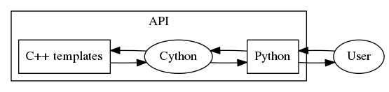

Architecture¶
| Author(s): | Francois Roy |
|---|---|
| Date Created: | 03-12-2017 |
| Language: | None |
| Status: | Draft |
Description¶
Structure of the Zolware API.
Architecture¶
Simple graphviz diagram:
A typical tree structure:
.
├── .coverage
├── .coveragerc
├── .git
├── .gitignore
├── .travis.yml
├── CMakeLists.txt
├── LICENSE
├── MANIFEST.in
├── README.rst
├── cmake
│ ├── DownloadProject.cmake
│ ├── FindSphinx.cmake
│ └── ReplicatePythonSourceTree.cmake
├── cmake.config
│ └── DownloadProject.CMakeLists.cmake.in
├── include
│ ├── Misc.h
│ └── Model.h
├── publish-key.enc
├── pytest.ini
├── requirements
│ ├── base.txt
│ └── development.txt
├── setup.cfg
├── setup.py
├── src
│ └── Misc.cxx
├── tests
│ ├── CMakeLists.txt
│ ├── test_Misc.cxx
│ ├── test_Model.cxx
│ ├── test_main.cxx
│ ├── test_model.py
│ ├── test_utils.py
│ └── test_wrapper.py
├── tox.ini
└── zolwareAPI
├── CMakeLists.txt
├── __init__.py
├── command_line.py
├── model.py
├── utils.py
├── w.pxd
└── wrapper.pyx
Suggested Technology¶
Deployment¶
Github, distutils and pypy
https://packaging.python.org/current/
https://docs.python.org/3/distutils/index.html#distutils-index
Testing¶
pytest and tox.